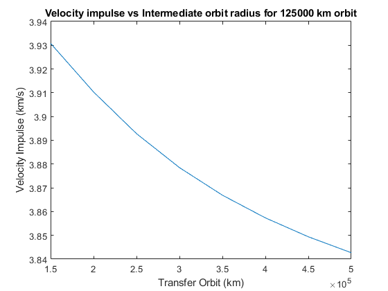
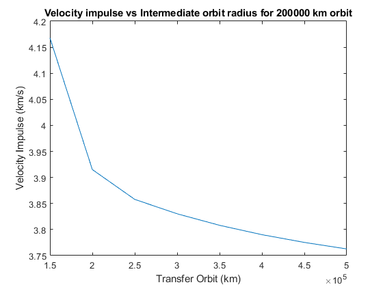
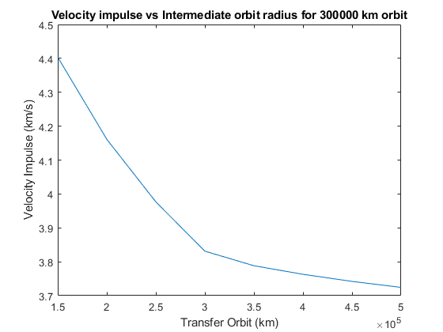

Contents
clear
clc
r_I = 1000+6378;
r_F = [131378,206378,306378];
del_V = ones(1,3);
fprintf('Hohmann transfer \n');
fprintf('Velocity Impulse required for final orbit \n');
for i = 1:3
del_V(i) = hohmann(r_F(i),r_I);
fprintf('%d km is %d km/s \n',r_F(i) - 6378,del_V(i));
end
Hohmann transfer
Velocity Impulse required for final orbit
125000 km is 3.938235e+00 km/s
200000 km is 3.888194e+00 km/s
300000 km is 3.814868e+00 km/s
Bi-elliptic transfer for different circular orbits
fprintf('\nBi-elliptic transfer \n');
Transfer_Orbit = (150000:50000:500000)';
del_V2 = zeros(size(Transfer_Orbit))';
for k = 1:3
for j = 1:size(Transfer_Orbit)
del_V2(j) = bi(r_F(k),r_I,Transfer_Orbit(j));
end
fprintf('Variation of velocity impulse for final orbit %d',r_F(k)-6378);
Velocity_Impulse = del_V2';
T = table(Transfer_Orbit,Velocity_Impulse)
T.Properties.Description = 'Transfer orbit in km; Velocity Impulse in km/s';
figure
plot(Transfer_Orbit,Velocity_Impulse);
xlabel('Transfer Orbit (km)');
ylabel('Velocity Impulse (km/s)');
title(['Velocity impulse vs Intermediate orbit radius for ',num2str(r_F(k)-6378),' km orbit']);
end
Bi-elliptic transfer
Variation of velocity impulse for final orbit 125000
T =
8×2 table
Transfer_Orbit Velocity_Impulse
______________ ________________
150000 3.93079969901372
200000 3.91035570364212
250000 3.89280173483763
300000 3.87851727170086
350000 3.8669039199179
400000 3.85735852382118
450000 3.84940795667344
500000 3.84269935299377
Variation of velocity impulse for final orbit 200000
T =
8×2 table
Transfer_Orbit Velocity_Impulse
______________ ________________
150000 4.16781618730305
200000 3.91511051993041
250000 3.85787797728111
300000 3.8301954270066
350000 3.80810567585065
400000 3.79013527847681
450000 3.7752579146819
500000 3.76275129503654
Variation of velocity impulse for final orbit 300000
T =
8×2 table
Transfer_Orbit Velocity_Impulse
______________ ________________
150000 4.40353513159879
200000 4.16121217159121
250000 3.97660076950524
300000 3.83122689368967
350000 3.78824118711665
400000 3.76298847597407
450000 3.74201705554617
500000 3.72433204571193
  